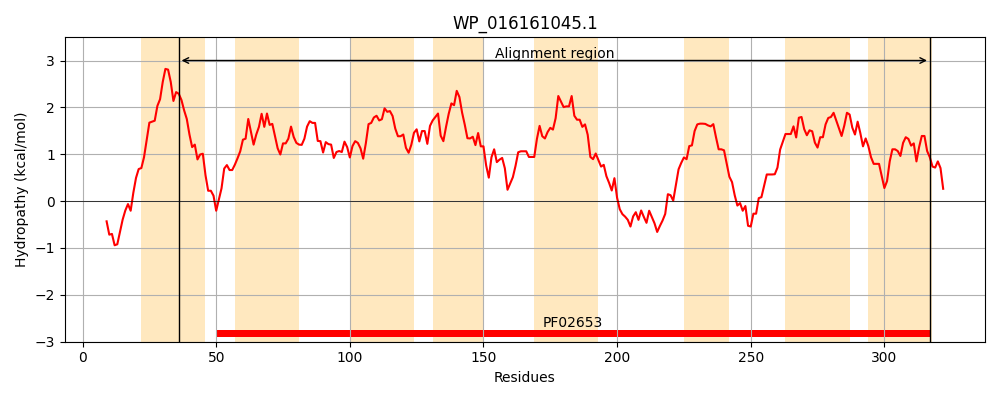
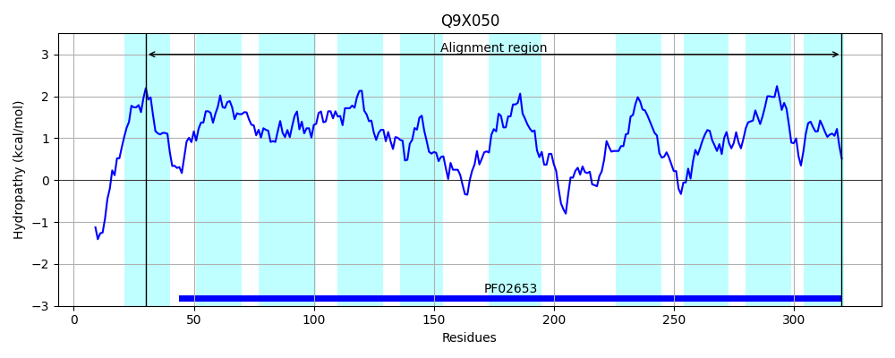
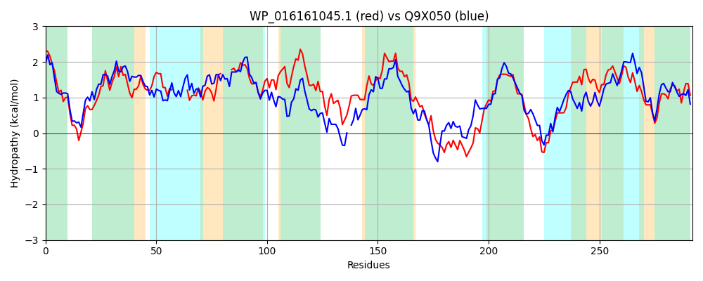

Hit Accession: Q9X050
Hit TCID: 3.A.1.2.19
Hit Description: gnl|BL_ORD_ID|19342 gnl|TC-DB|Q9X050|3.A.1.2.19 ABC-type transporter, integral membrane subunit OS=Thermotoga maritima (strain ATCC 43589 / MSB8 / DSM 3109 / JCM 10099) GN=TM_0955 PE=4 SV=1
Mach Len: 292
e:0.000000
Query TMS Count : 8
Hit TMS Count: 10
TMS-Overlap Score: 6.850000
Predicted Substrates:CHEBI:10410;beta-D-ribopyranose
BLAST Alignment:
Score: 596 , Bit scores: 234 bits, E-value: 3.6e-75, Alignment length: 292, Percentage identity: 46
Query: 36 VVFSLITSNFLTGTNWLNIIRQSAPLLIVATAMTLVITTGGIDLSVGSTLALVGALSA------IALNNWGLPWPVVLLG----GLLLGGFVGAINGFFIAYEGIPAFIVTLATLAVVRGIALLVTQGYSIPVPADSLFTFIGRAWVVGIPMPALIGMMILVIGHIVLNHMRFGRYVTAIGANAEGARRSGINTKAVTMKVYIISGMAAALAGMIITARLGSGSSNQGEGFELQVIAAVVLGSTSLFGGFGTIIGTLLGALSIAVIQNGLILSHISPFYTQIATGTIILLAI 317
V+FS +++ FLT N+ I+RQ+A L +A MT VI TGGIDLSVGS L GA++A + L+ +G+ LG G+L G +G NGF I IP F+ TL T+ VRG +L+T+G+ I DS F FIG W +GIPMP I + +G +L +FGRYV A+G N + A SG+N+K + VY ISG+ +A+AG+I+TARL S N G +EL IAA V+G SL GG GT+IGT++GAL I V+ +GL+L +SPF+ Q+A G II+ A+
Sbjct: 30 VLFSFLSNRFLTLENFWIILRQTAVNLCIAVGMTFVILTGGIDLSVGSILGFSGAVTAKLLKYGLILSAFGVVLKFNPLGASIIGVLAGFAIGLFNGFIITRFNIPPFVATLGTMTAVRGFIMLLTKGHPITRLGDS-FDFIGSGWFLGIPMPVWIAAIATGVGIFILRKTQFGRYVYAVGGNEKAAVLSGVNSKLTKLWVYAISGILSAVAGLIVTARLDSAQPNAGLMYELDAIAATVIGGASLSGGKGTLIGTVVGALIIGVLNDGLVLVGVSPFWQQVAKGFIIIAAV 320 | Protein Hydropathy Plots: |
|---|
|  |  |
Pairwise Alignment-Hydropathy Plot:
|
|---|
|  |